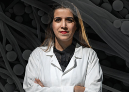
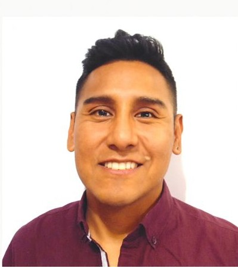

Dr. Maryam Salehi holds a Ph.D. in Civil and Environmental Engineering from Purdue University and is a leading expert in microplastics research with more than a decade of experience in polymers, plastics, contaminant fate and transport, and water treatment processes. She brings extensive academic and applied research expertise, including the development of advanced analytical methodologies for quantifying, characterizing, and assessing the degradation of micro- and nanoplastics; advancing water and wastewater treatment practices to improve microplastic removal and understand their fate within potable reuse systems; investigating their degradation and transport in stormwater runoff, coastal environments, and riverbeds; and evaluating sampling strategies for accurate microplastic quantification and assessing their accumulation in agricultural soils. Her research-driven approach provides scientific foundation and technical insight that guide our company’s services and innovation.
Google Scholar
Dr. Alexander Ccanccapa-Cartagena brings over ten years of experience and deep expertise in advanced mass spectrometry and spectroscopy, including LC-MS/MS, LC-QTOF, Py-GC/MS, ICP-OES, and FTIR, with a strong focus on robust method development, validation, and regulatory-ready data generation. He routinely performs and documents method validations in accordance with federal requirements, including full compliance with the National Laboratory Certification Program (NLCP) guidelines. His work spans diverse applications such as clinical toxicology, extractables and leachables for medical devices, pharmaceuticals, personal care products, pesticides, microplastics, and trace metals, across complex matrices including urine, oral fluid, biological tissues, medical devices, food, drinking water, wastewater, surface water, sediment, and soil, all under rigorous QA/QC, GLP, and GMP-aligned frameworks.
Google Scholar